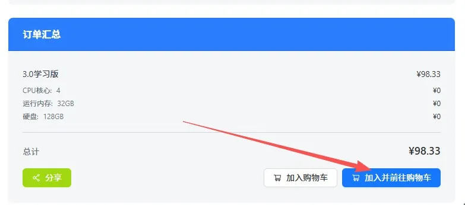
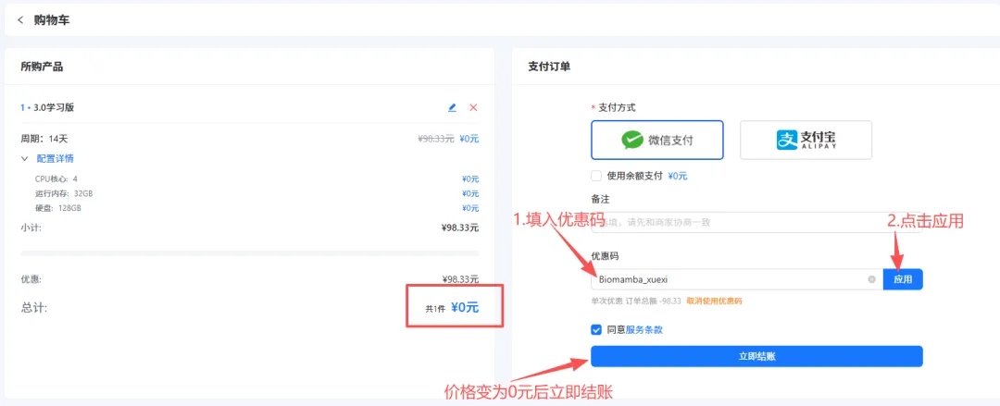
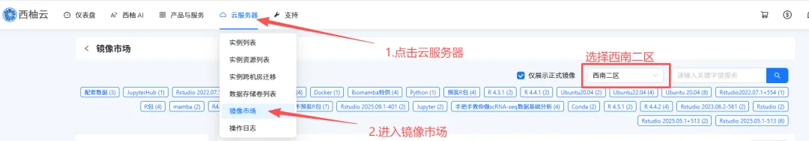

免费32GB、128GB服务器现可申请，五十个名额
原文：https://mp.weixin.qq.com/s?__biz=MzAwMzIzOTk5OQ==&mid=2247537856&idx=2&sn=43e140862534a8c963e8c1a5fc9f4d95&chksm=9b3c2d90ac4ba4862f5ec98ea4af0d89b59ea26ba9f2a72ac9f27f53e6df2806dd6158df726e#rd 合集：服务器
如果你在生信分析时缺少设备，我们给大家提供了独享服务器2.0即将上线，128GB免费试用，也就是说，大家犹豫要不要入手时，可以先免费上车试用一下！试用流程见下文。短平快，配置与价格见下图，详细介绍见入手足够完成硕博生涯的生信环境、独享用户连技术支持都是独享的、RTX5090、4080S、5070显卡上机。随时滴滴微信号[Biomamba_zhushou]咨询获取教程,也欢迎注册试用：https://biomamba.xiyoucloud.net/


试用申请流程
之前给大家用来练手的学习版由于机房升级一直没有上架，现在是时候回归啦。给大家上架了一批免费的 、32GB 、4线程 的服务器(使用时长两周)，配合我们的十小时学会Linux，应该足够你完成Linux的学习啦。每个月都会新增50个名额，正式使用版不限名额：足够支持你完成硕博生涯的生信环境。大家可以随时联系微信[Biomamba_zhushou]申请免费的服务器：
 大家可以根据视频来申请体验权限：
现在还有专属的单细胞数据分析镜像：妈妈再也不用担心我学习单细胞课程的时候没有服务器啦：这可能是全网最全的scRNA-seq分析教程！单细胞+空间转录组，Python全流程实战教学！
学习版权限申请图文流程：第一步 ，复制网址(https://biomamba.xiyoucloud.net/)至浏览器，注册账号实名认证。第二步 ，点击进入生信服务器列表，选择3.0学习版的"点击购买"，加入购物车：
大家可以根据视频来申请体验权限：
现在还有专属的单细胞数据分析镜像：妈妈再也不用担心我学习单细胞课程的时候没有服务器啦：这可能是全网最全的scRNA-seq分析教程！单细胞+空间转录组，Python全流程实战教学！
学习版权限申请图文流程：第一步 ，复制网址(https://biomamba.xiyoucloud.net/)至浏览器，注册账号实名认证。第二步 ，点击进入生信服务器列表，选择3.0学习版的"点击购买"，加入购物车： **
**

第三步 ，输入并应用优惠码(联系文末领取)，查看价格是否变成0元**

** **第四步 ，联系文末微信，发送账号/用户ID，我们为您激活服务器 第五步 ，进入控制台创建实例选择西南二区
现额外添加了"手把手教你做scRNA-sseq基础分析"镜像，大家选择这个镜像就可以参加本次的课程啦~获取"手把手教你做scRNA-sseq基础分析"镜像，请联系客服微信[Biomamba_zhushou]

创建服务器实例，设置账户和密码，获取IP和端口

 设置好之后就可以用ssh正常远程连接啦：
设置好之后就可以用ssh正常远程连接啦： Rstudio-server也是可以正常使用的，大家可以愉快的学习R语言和单细胞：
Rstudio-server也是可以正常使用的，大家可以愉快的学习R语言和单细胞：


如何联系我们

 留一个领取资料、开箱即用的单细胞分析镜像的微信号[Biomamba_zhushou]，方便各位随时交流。同时我们也构建了交流群矩阵，欢迎大家入群讨论。
大家可以阅读完这几篇之后添加给生信入门初学者的小贴士如何搜索公众号过往发布内容
留一个领取资料、开箱即用的单细胞分析镜像的微信号[Biomamba_zhushou]，方便各位随时交流。同时我们也构建了交流群矩阵，欢迎大家入群讨论。
大家可以阅读完这几篇之后添加给生信入门初学者的小贴士如何搜索公众号过往发布内容
已有生信基地联系方式的同学无需重复添加

 您点的每个赞和在看，我都认真当成了喜欢
您点的每个赞和在看，我都认真当成了喜欢